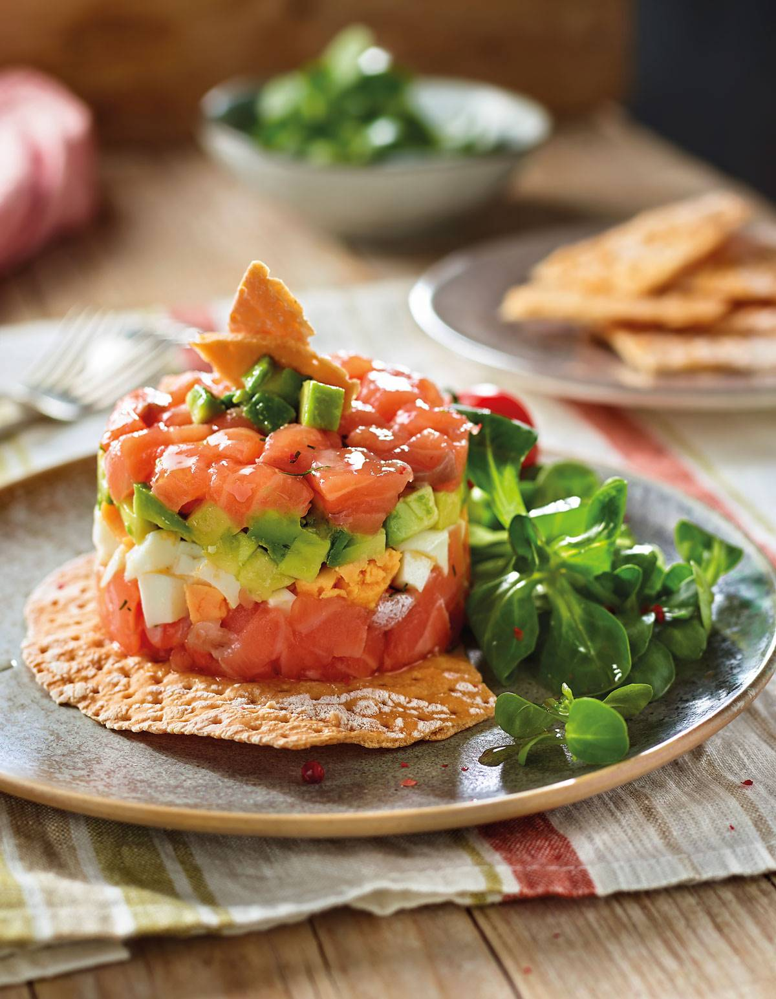

Recetas Recomendadas
Las recetas más sanas y populares de este mes, votadas por nuestros usuarios a través de nuestras encuestas en redes sociales.
Cheat Meal
Tequeños
Tequeño es una preparación culinaria originaria de Medio Oriente que consiste en una masa de harina de trigo frita, rellena de queso blanco o feta.

Jorge Linares
Mayo 12, 2022


Healthy Food
Tartar de atún
Tartar de atún es una preparación de pescado crudo picado fino, opcionalmente con condimentos o salsas. En este caso usaremos aguacate y queso.
Maria González
Marzo 29, 2022


Laura Martín
Mayo 29, 2022
Vuestras Recetas
Maria González
Muy divertido el reto de esta semana!!!
Laura Martín
A mi me gusto más el de la semana pasada ;)
Maria González
Yo prefiero el de esta semana por el partido de fútbol ;)
Jorge Linares
Este reto es demasiado fácil, subid la dificultad para el proximo